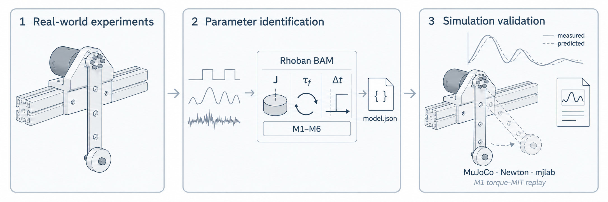

MotorFit#
MotorFit identifies actuator dynamics from measured motion. Mount a motor on a pendulum fixture, record its response to position commands, and fit a model that predicts the motion under different loads and controller gains.
It supports RobStride and Damiao motors over Linux SocketCAN. MotorFit provides the drivers, recording tools and simulation adapters; Rhoban BAM provides the friction models and optimizer.

What you get#
A fitted model.json contains friction, effective inertia, torque scaling,
command delay and coordinate-offset parameters. You can evaluate it against
recordings that were excluded from fitting, or replay a supported M1 model in
MuJoCo, Newton or mjlab.
The output is an actuator model for the measured operating conditions. MotorFit currently models a single pendulum joint; it does not automatically calibrate an entire robot or edit its XML. See Parameters for the physical meaning of the fitted values and their connection to simulation.
Start with a recorded example#
Run the quickstart to reproduce three real RS05 recordings and inspect their prediction errors. You need Python 3.12, uv and access to the source repository. A motor and GPU are unnecessary for this first run.
Identify your own motor#
Follow the guides in order. Each uses the same configuration and study directory.
Plan the experiment: choose loads, motion and evaluation runs.
Set up the bench: describe the motor, fixture and connection.
Record motion: establish the zero, collect runs and check their quality.
Fit a model: process the data and compare candidate models.
Evaluate the result: measure error on held-out runs and inspect residuals.
Current support#
Capability |
Available |
|---|---|
Motor acquisition |
RobStride private CAN protocol; Damiao MIT protocol |
Identification |
BAM M1–M6 friction models with torque-MIT control |
Physics replay |
M1 with the pendulum fixture |
Hardware reference |
One RS05 study; Damiao currently has software tests |
Supported models lists the shipped profiles. The RS05 study describes the experiment, selected parameters and remaining prediction errors.
The package is 0.1.0, unreleased. The menu beside the logo selects the handbook version. The documentation is public; the source repository currently requires GitHub access.